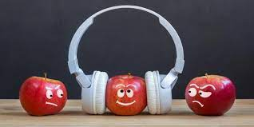
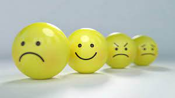

LO QUE SE SABE DE LA FELICIDAD DE LAS PERSONAS
Cuando hablamos de felicidad la gente o bueno la mayoría de personas en la actualidad piensan en algo pasajero, algo que las personas de hace unas cuantas décadas no verían así… Hoy en día vemos que la gente se toma algo o todo como pasajero prefieren tomar un camino fácil o eso que más los beneficia de manera rápida sin tomar o querer responder por sus actos lo ven todo con una facilidad la cual solo es momentánea la cual los carcome hasta dejarlos vacíos con el pasar de los años sin ninguna motivación mientras que unas personas de hace algunos años buscaban algo más estable y duradero de ahí la frase “Dos cosas contribuyen a avanzar: ir más deprisa que los otros, o ir por el buen camino “lo cual nos da a entender que los progresos se consiguen mediante el esfuerzo. Ir más deprisa que los demás puede parecer que nos hace avanzar, pero puede conducirnos por una vía que nos lleve al engaño. Por otro lado, avanzar meticulosamente dudando de la realidad permite que las conclusiones que acabemos extrayendo sean probablemente más ciertas.
En otras palabras, es más satisfactorio lograr algo mediante esfuerzo y es más fácil llegar a la felicidad si es que se logra mantener aquel camino por el que uno sacrifica tiempo de vida y no hacerlo por algo temporal como el dinero y que tal cosa como eso los llevara a una felicidad eterna, para Sócrates la felicidad o aquel punto en el que se podía llegar a lograr era el conocimiento pues esta nunca se llegaba a acabar y se podía seguir explotando sin límites y aun seguimos usando esos conocimientos y mejorándolos como secuelas de algunas de sus enseñanzas las cual prevalecen. Para Nietzsche era bueno un poco de todo experimentar todo lo que nos da la vida pero con moderación y si miramos bien la doctrina religiosa se parece mucho a las teorías de Sócrates sobre la felicidad solo que a esta última le cambian la palabra de conocimiento por Dios “aquel al que todos los buenos cristianos adoramos” diría un fiel creyente a lo largo de la vida percibimos que todo por lo que pasamos de una manera u otra nos deja secuelas de lo que es ser feliz hasta aquellas veces por las que la gente llora.
Aquella persona que cuando nos miramos al espejo decimos ese soy yo pero de hace 4, 5, 6, 7, 30 años pues yo soy todos ellos y a la vez fui uno cada uno con distintos recuerdos, experiencias y al verse al espejo se alegra de todo lo que ha vivido de aquel camino que por tanta frustración, desmotivación, perseverancia y diciplina surgió por eso una persona adulta diría que la felicidad es hacer lo que le gusta a uno pues no habría otra forma de lograr aquello que anhelamos como cumplir nuestras metas y luego plantearnos nuevas trae una satisfacción que cuando un joven interesado en el tema logra heredar esos pensamientos y visualizarse para lograr aquel camino que podrá recorrer y sonreír atemorizado, alegre, ansioso por todo lo que va a vivir pues no es aquello tener 14 años a tener 18 y ver el mundo de distintas formas cada vez con más y más conocimientos. A la gente le pasa que ve algunas cosas que no sabían cuando tenían tantos años y que cuando vuelven a ver dicen “yo si era como idiota” y proceden a romperse en una risa pues se acordaron de todo lo que pasaron para allegar hay.
En cambio, si vemos desde un punto de vista más afín con una persona que logro su camino mediante el pasajero esta sin duda alguna vive muchas experiencias “ claro “ llegan a creer que están viviendo la vida por un tiempo sin ver lo que los rodea hasta tienen el descaro de mentir a sus propios progenitores y decirles que todo anda bien así atrayéndose a sí mismos a una burbuja mental que los rompe a ellos mismos y a los que los rodean pues puede que aquellos que los rodean sientan que no avanzan tan rápido como ellos y con respecto a los que los criaron sentirse un exceso de orgullo y pensar que estos últimos con gran esfuerzo lograron eso que los llevo a la felicidad momentánea, Mas tarde podemos apreciar que esa misma gente cae más rápido llevando un camino rápido pero peligroso pues lo que hacen no fue si no momentáneo estos llegan a caer tarde o temprano, aquel que escoge entre lo pasajero solo ve a lo que tiene que llegar omitiendo todo y eso le causara problemas en el camino a lograr la felicidad pues este puede llegar a alcanzar su objetivo pero no a adquirir las experiencias ni el conocimiento por eso muchas veces vemos a profesionales sin conocer nada de lo que aprendieron pero llegaron hasta hay pues es fácil apreciar la diferencia entre alguien que es bueno por que logra resplandecer un brillo que llama a la gente a su alrededor que la admira que cuando vemos una persona que parece una mala influencia y que desperdicia todo su potencial todo aquello que pudo llegar a ser sintiéndose triste por si dentro viendo que pudo haber hecho otras cosas y lograr algo estable o tener pensamientos pero logre mis metas pero a que costo no soy feliz tengo todo lo necesario para vivir y aun así siento un vacío por dentro que me está carcomiendo y por más que la gente se acerque a ellos no logran sanar su problema interior Impidiéndoles el camino a la felicidad por causas que ellos mismos provocaron.
Por ultimo están las personas que llegaron a ser felices o estaban en un mundo de felicidad absoluta tenían todo, sin embargo estas tienen un alma muy sensible o como lo diría alguien normal “sentimientos” pues estas pueden entrar o a la tristeza absoluta o recomponerse y seguir adelante con o sin ayuda pero les es difícil pues una vez sucedido un caso o hecho pueden darse a morir o levantarse entre lágrimas y remordimientos después de haber sido abolidos hasta el sufrimiento seguir adelante sin miedo a lo que venga y con sus sueños, metas claras claro estas no tienen algún talento o algo que los haga destacar… Tal vez su talento sea levantarse una y otra vez con una diciplina y mentalidad que no los deja rendirse en el caso que sean capaz de superar sus hechos, pero si estas no deciden levantarse terminan mal y dejándose llevar por aquello que les impide salir en sí mismos llenándose con obstáculos y impidiéndole totalmente de la felicidad.
Incluso en los sueños se puede lograr sentir la felicidad es algo que no sabemos como describirlo con palabras convencionales o hasta el momento que no hemos logrado dejar clara pues lo que lo hace feliz a uno no hace feliz a otro ni a los animales pues estos tienen una forma distinta de pensar a nosotros sienten todo lo que les rodea pueden sentirse mal, cuando alguien les hace falta sentirse bien cuando la persona vuelve y cuando están con dicha persona son felices comiendo o haciendo lo que les gusta se podría decir que estos por si mismos son las criaturas que mas saben que los hace felices no hacen nada pero son de cierta forma conscientes de sus acciones y así como ellos sonríen nosotros también igual que en los sueños nosotros como ellos saben lo que esta pasando y si los hace feliz, les da miedo o es común siempre la felicidad va estar presente en muchos aspectos de la vida.
Para finalizar la felicidad depende de los estados de ánimo y de las personas como estas sean capaces de lograr superar sus sentimientos y no ser tan avaricioso pues si no, es difícil capaz de lograr alcanzar la felicidad la cual les percibe captar cosas que no se ven a simple vista pues al lograr el conocimiento de lo que uno ha vivido es capaz de sonreír y pasar buenos momentos poniendo de su parte claro no se puede llegar a ser feliz por completo pero si puede lograr un buen estado de felicidad durante la vida ya sea la persona haya pasado por muchas cosas siempre se lograra algo de felicidad tarde o temprano esta logra surgir desde distintas situaciones hasta de la tristeza de recuerdos de ver todo lo que nos rodea pero siempre se va a encontrar en el conocimiento pues ya sea un sordo puede sentirla o mudo puede escuchar entender lo que dicen por sus propios métodos y formas de percibir lo que logran captar sus sentidos y mente , hasta los animales logran distinguir lo que los hace felices o tristes pero si en realidad se quiere buscar un significado de felicidad seria vivir y no el conocimiento pues como tal si alguien no está vivo o bueno este ser tenga conciencia de lo que hace no podrá lograr ser feliz u experimentar cosas percibir cambios sentir el aire en el cuerpo o sensaciones que logren hacerlo sentirse vivo y conforme con si mismo “cogito ergo sum” pienso luego existo dijo descartes aunque uno no crea los animales piensan y de alguna manera ellos saben que están vivos así como son capaces de reconocer a los que los domestican, también así como nosotros pensamos cualquier persona o animal es capaz de sentir l a felicidad pero primero debe existir y vivir la vida.